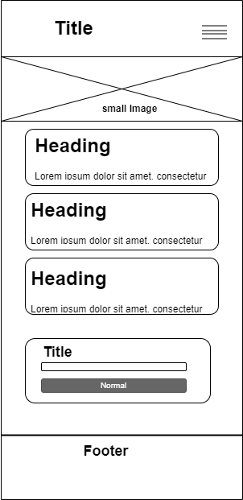
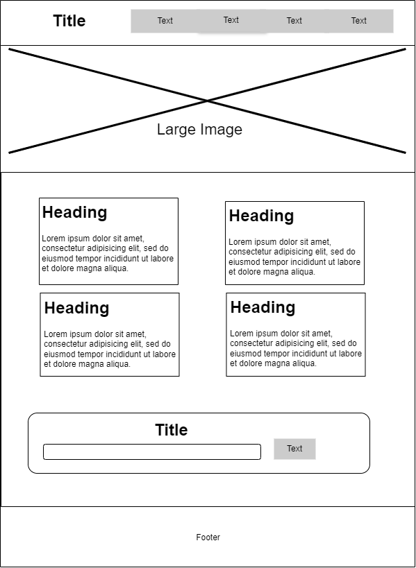

Site Name
Novus Foundation
Reason: This name directly represents our organization and its mission to bring new (novus) ideas and opportunities to youth and women through innovation and entrepreneurship.
Site Purpose
The Novus Foundation website serves as a central hub for our mission to empower youth and women through innovation and entrepreneurship. It will:
- Showcase our programs and initiatives
- Highlight success stories from our beneficiaries
- Provide resources for aspiring entrepreneurs
- Offer a platform for event announcements and registrations
- Enable newsletter subscriptions for updates
- Facilitate contact and engagement with our foundation
Scenarios
-
Scenario 1
As a young aspiring entrepreneur, how can I find mentorship opportunities through Novus Foundation?
-
Scenario 2
As a potential donor, where can I find information about the impact of Novus Foundation's programs?
-
Scenario 3
As a woman in tech, what resources does Novus Foundation offer to support my career growth?
Color Schema
- Primary Dark Blue: #081827 - Used for main background and footer
- Secondary Dark Blue: #062a44 - Used for header background and some section backgrounds
- Accent Blue: #0070ba - Used for buttons, links, and highlights
- White: #ffffff - Used for text on dark backgrounds and some section backgrounds
Typography
- Headings: Roboto Slab - A serif font for a professional and authoritative look
- Body: Open Sans - A sans-serif font for easy readability in paragraphs and smaller text
- Accents: Montserrat - Used for buttons and call-to-action elements
Wireframe
Mobile View

Desktop View
